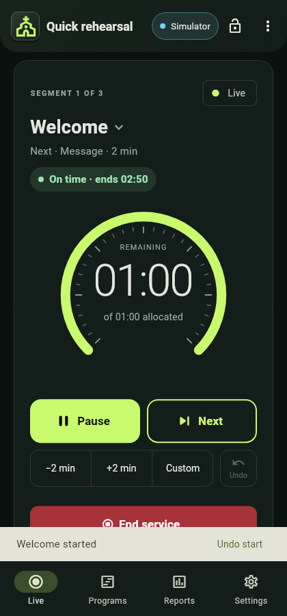
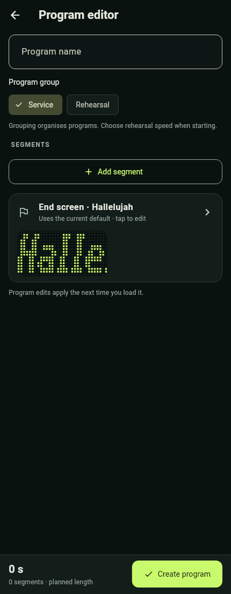
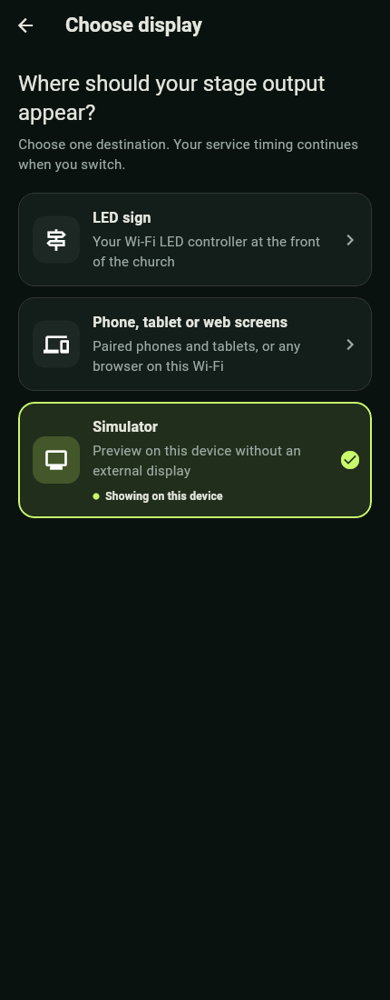
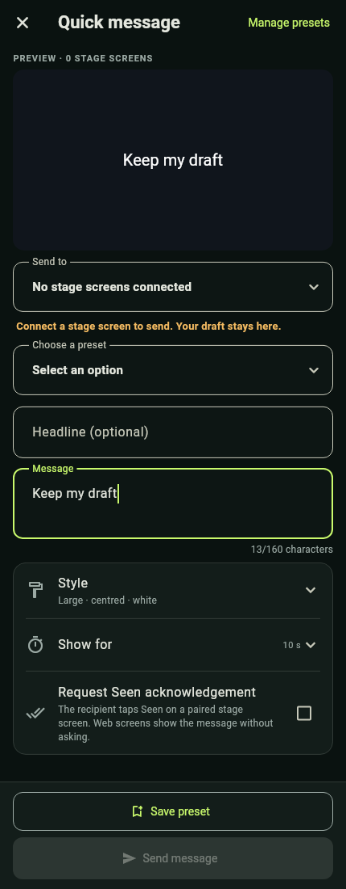
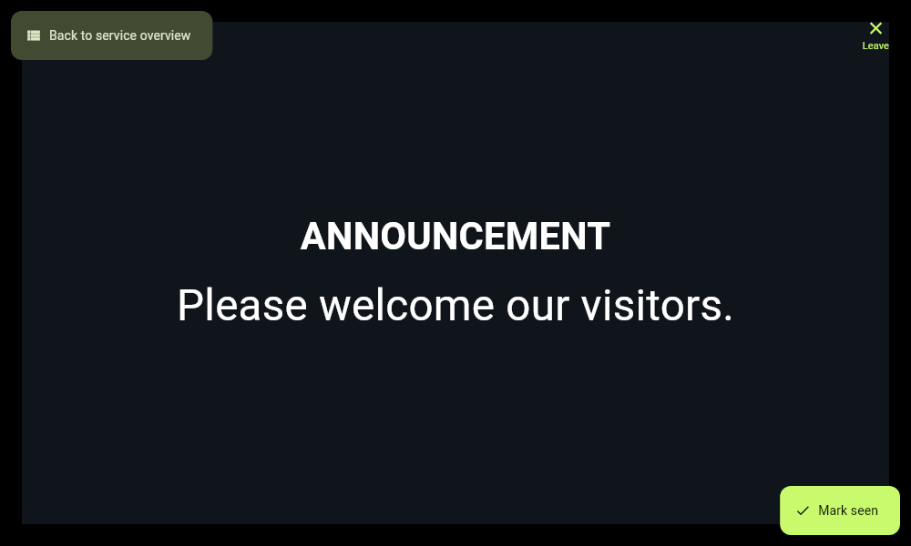
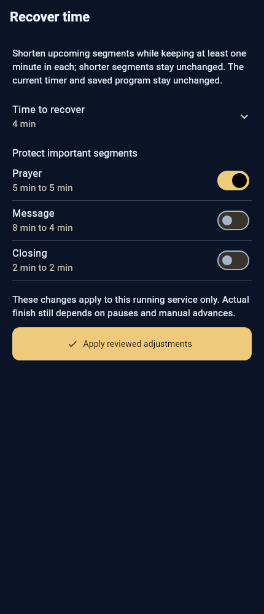
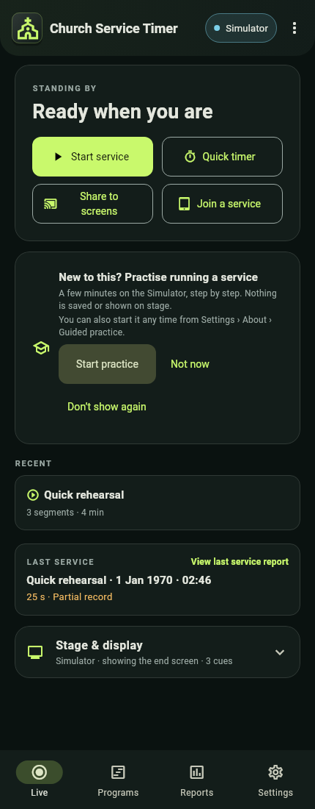
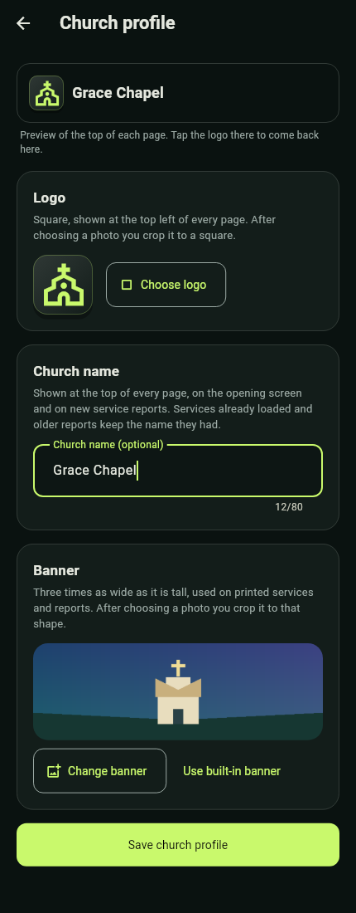
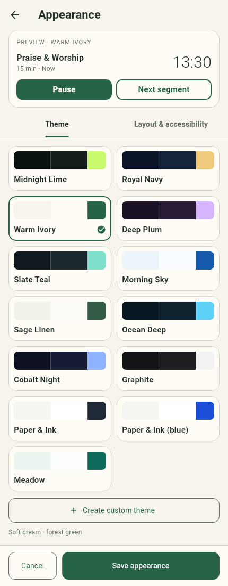

For app 0.30.0 · Prepared 10 November 2026 · Creator I-Proton
This handbook teaches a new operator to prepare a program, run its timer, communicate discreetly with the stage, recover from common interruptions, and close the service with a useful report. Keep it beside the phone during your first rehearsal. Screenshots use example data from automated app previews; they are illustrations, not evidence that a particular physical display is connected.
Start with a simulator rehearsal. Move to the church's actual equipment with an experienced operator before running a service alone. The app is an Android prototype with tested support for a specific LED controller; reliable use still depends on the phone, network and stage equipment.
01 — Understand the workspace
A Program is a saved plan. A service is one run of that plan. Editing a saved program prepares a future run. Adjusting a running service does not rewrite the saved program or old reports.
The four bottom tabs are your main destinations (on a tablet they sit in a side rail):
| Tab | Use it for |
|---|---|
| Live | Start and operate a service or a Quick timer, inspect output, send cues and messages, share to screens or join a service. |
| Programs | Create reusable plans, arrange segments, add speakers and private notes, set each program's end screen, keep a segment library and version history. |
| Reports | Review completed services, compare durations, add review notes, export, share and print records. |
| Settings | Church profile, appearance, warnings and alerts, display settings, stage cues, Quick message presets, Screens & devices, LED device management, backups, Settings PIN and About. |
Moving between tabs. Tap the bar, or swipe left or right anywhere on the page. Each tab keeps its place when you come back to it. While a service is loaded or running, Live stays put: leave it with the bar, and swipe back to it from any other tab. A running-service bar on the other tabs, and Return to Live on Settings pages, take you straight back. Swiping is off while the controls are locked or while programs or reports are being selected; a sideways list or slider still scrolls as before, and a swipe from the very edge of the screen is still Android Back. With reduced motion on, the new tab appears at once.
The Back key on Programs, Reports or Settings returns to Live. On Live it asks you to press Back again before leaving the app; during a service it asks for confirmation and explains that the timer keeps running.
The display chip at the top of Live (for example "Simulator") opens Choose display. Selecting a destination and connecting it are separate from starting a service. Beside it, the lock icon locks the controls and the ⋮ menu holds Focused operator view and Ready for service. Your church logo, or the built-in mark, sits at the top left; tap it to open the church profile.
Learn these three readings before touching a control:
| Reading | What it tells you |
|---|---|
| Main progress arc | The operator's current segment time, allocation and warning/overtime state. |
| Display preview | What the selected output is simulating or last acknowledged. Check its badge and any stale or "Output paused after an interruption" indication. |
| Timing status and Service timing overview | Progress against the whole plan ("On time", "45 min behind" and so on); its estimated finish can change with pauses and manual advances. Tap the status line for the full overview. |
A running arc does not prove the sign is receiving updates. Likewise, Controller accepted or Stage screens received means the receiving system acknowledged data; it is not a camera view of what a person can see.


Use the labels as well as colour: normal time, warning and overtime have different meanings. In Royal Navy, the normal arc is green while the surrounding theme remains gold; warning is amber and overtime is red.
02 — Your first rehearsal
Allow about 15 minutes. Use the simulator so no practice cue reaches a real stage.
The quickest start is guided practice. On a new phone, Live shows a card: "New to this? Practise running a service". Choose Start practice, Not now (hides it until the app is next opened) or Don't show again. You can start it any time from Settings › About › Guided practice.

- Practice loads a built-in 17-minute Practice service that runs at 5× speed on the Simulator, so nothing appears on stage. It is never added to Programs, saves no report and leaves your programs, reports and settings alone.
- If another display is in use, practice asks Practise on the simulator? before switching, and offers to switch back when practice ends.
- A coach card lists eight steps, ticked off as you do them in any order: start, pause and resume, add and remove 2 min, next and Undo, a cue and the timer, blank and unblank, see overtime, and end. A pulsing ring and a small "Tap" badge show which control the current step needs; it never blocks a tap.
- Use Skip step or Leave practice at any time. At the end, a summary such as "8 of 8 steps done · about 4 min" offers Practise again, and About shows when this phone last practised.
- Practice cannot start while a service is loaded or running, or on a paired operator phone.
Then try the full workflow yourself:
- Install the supplied Android app. Check Settings › About for its version. This guide describes 0.30.0. Update every phone together: program files, backups and sent programs saved by 0.28 or later cannot be opened by 0.27 or earlier.
- Tap the display chip at the top of Live and choose Simulator. Confirm the chip and preview badge say Simulator.
- On Live choose Start service, then load Quick rehearsal (a Pinned or Recent program card on Live loads straight away). Loading a program enters Ready; it does not start the countdown.
- Review the first and next segment. While Ready, choose Service mode: Live timing · 1× or a Fast rehearsal speed. A program's Service/Rehearsal grouping is not its speed setting. Change swaps in another program without leaving Ready.
- Select Start first segment. When the display is connected and nothing needs attention, the service starts at once and Undo start is offered for 8 seconds; otherwise a confirmation explains what to check.
- Tap Pause, confirm, and observe the held timer. Tap Resume, then try Custom to add or remove minutes and seconds. Read the proposed result before confirming.
- Open Stage & display and tap one prepared Stage cue. It sends immediately. The countdown continues underneath. Choose Show timer to restore the current timer, not the original starting time.
- Tap Blank screen, then Unblank screen. Blanking hides output; it does not pause the service.
- Use Next (Next segment on a tablet) when the current activity is finished. If this was accidental, use Undo while it is available and review the confirmation.
- Allow a segment to reach zero. Observe the operator's red overtime and the shared At zero display behaviour. Reaching zero does not automatically advance the program.
- Choose End service and confirm. Live returns to Standing by after the report saves. On the Last service card, tap View last service report.
- Finally, tap Quick timer on Live, choose 5 min and start it. Notice there is no Ready step. Tap End timer when you have seen it count. See Operate a live service for details.
You are ready for the next lesson when you can explain: Ready versus running, Pause versus Blank, Show timer versus Next, a Quick timer versus a service, and a display acknowledgement versus a physical check.
Fast rehearsal accelerates simulated service time (5×, 10×, 30× or 60×). Reports identify it as rehearsal timing, and duration insights exclude rehearsals. Use normal speed for the supported physical LED countdown.
03 — Build a reusable program
Open Programs and tap New program. (With no programs at all, Programs offers Create program and Import.) In Program editor, give the plan a useful Program name; “Youth sunday” is the example placeholder, not a mandatory name.
- Choose Service or Rehearsal as its Program group.
- Use Add segment for each activity, in the order it will happen. Enter a Segment name and set its duration in minutes and seconds, for example 5 min 30 s. Each segment stays within 59 min 59 s.
- Add a Speaker (optional) and Private operator notes where useful: microphone changes, music cues or an agreed finish instruction. Notes are never shown on the sign.
- Turn on Protect duration for a segment that time recovery must not shorten.
- Reorder segments using the drag handles ("Drag the handle to reorder" appears once there are two or more).
- Review the End screen row. It reads "Uses the current default" until you give this program its own end screen.
- Choose Create program for a new plan, or Save changes after editing.
Example practice plan:
| Segment | Duration | Speaker / private preparation note |
|---|---|---|
| Welcome | 2 min | Host · have microphone 1 ready. |
| Worship | 5 min 30 s | Worship lead · confirm final song with the team. |
| Message | 8 min | Speaker · send the agreed wrap-up cue. |
| Closing | 2 min | Host · confirm announcements before closing. |


Open a row in Programs for Program details, with Load into Live and Edit program up front. Its ⋮ menu holds Duplicate, Export JSON, Export CSV, Print order of service, Send to paired phone (while one is connected), Version history and Delete program, which asks for confirmation. A duplicate is useful for a special service without overwriting a familiar plan.
In the Programs list, the pin icon marks pinned programs, which Live offers first. Press and hold a program to start selecting; the bar at the bottom then offers Pin, Share, Export and, in red, Delete (with a 10-second Undo). Back or × finishes selecting.
Segment library. For segments you use often, such as Offering or Announcements, open the segment in the editor and tap Save to library. It keeps the duration, speaker, notes and protection. From library next to Add segment inserts one into any program, with search. Saving the same name again updates it. Programs › ⋮ › Segment library lists them and removes one, with Undo. Up to 50 are kept.
Version history. Each time you save a change, the version before it is kept, up to the last 10. Program details › ⋮ › Version history lists them with what changed (for example “Added “Offering”, +4 min in total”). Tap one to open it as "Earlier version" and choose Restore this version, with Undo. Restoring keeps the current name, and the version it replaces stays in history.
Unfinished program edits are saved locally as drafts after a short delay ("Draft saved" appears once you change something). On reopening, choose Restore draft, Discard draft, or Cancel. Restoring is not the same as saving the program. If a save fails, keep the app open and use its retry action. The latest keystrokes can be lost if the phone kills the app before a pending write completes.
Importing. Use Programs › ⋮ › Import programs (JSON or CSV), or open a program .json or .csv file shared to the app. Every import goes to a review ("Preview program import") before you choose Import program.
| File | What it carries |
|---|---|
| Program JSON | Everything: segments, speakers, notes, protection and end-screen formatting. |
| Simple CSV | The header Segment Name,Duration (Minutes), with an optional Seconds column. Names and durations only. |
| Any other spreadsheet (CSV) | Opens Match spreadsheet columns. The app guesses which column is the name, duration, speaker, notes or program, and reads durations written as 5, 5.5, 05:30, 5 min or 90s. A live preview lists every problem by row number. The choice is remembered, so next week's sheet in the same layout needs one tap. Then Continue to review. |
Current limits are 1 MiB and 200 segments. Export Excel files as CSV first. The LED native countdown has its own limit, explained in the LED lesson.
Sending a program to another phone. While sharing to screens, Program details › ⋮ › Send to paired phone sends the program to the connected operator and viewer phones you tick (stage screens are left out). Private notes are optional. The other phone shows a "Program received" card with Review. If it already has a program with that name, Update mine replaces it and keeps its current version in Version history; Save as copy adds it with a numbered name. Received programs wait until reviewed, even after leaving the pairing (up to five), and are not included in backups.
Global warnings and At zero settings are shared on the receiving phone. Importing a program does not establish an independent set of warning rules for it. Keep exports containing private notes within the operator team.
04 — Choose the right display
Tap the display chip at the top of Live, or Change display, to open Choose display. Each choice shows what is connected, for example "1 paired · 2 web connected".
| Destination | Best use | What it needs |
|---|---|---|
| Simulator | Training and checking the exact 32 × 16 LED layout on the operator phone. | No external screen. It does not send to hardware. |
| LED sign | A physical red LED countdown and short cues. | The supported W2 profile, sign Wi-Fi, and its connection password. |
| Phone, tablet or web screens | A large stage countdown, rich Quick messages, recipient groups and Seen, on paired Android devices or any browser on the same Wi-Fi. | Paired devices need the app; browsers need nothing installed. All need a network that lets devices reach each other. |


LED sign and Phone, tablet or web screens are alternative stage-output destinations in this build. Sharing to viewers, operators and web screens is separate, so sharing does not itself require replacing the LED destination.
Web screens let a laptop on a projector, a smart TV, a tablet or people's own phones follow the service in a browser, without the app and without the internet. They work while this phone is sharing (see Pair a phone or tablet). A web Stage display counts as a stage screen: it receives cues, scrolling and flashing text, and Quick messages sent to it.
Changing destination preserves the service timer and stops LED reconnect attempts when another destination is chosen. When leaving a connected LED sign, choose whether to Blank previous sign or Leave output. A sign left displaying a countdown can continue on its own.
Always check the badge after changing output. A simulator preview, an authenticated LED connection and an acknowledged mobile screen are different states. Use Test screen (or Test 5 s in the Quick message composer) and have someone confirm the intended physical screen before the service.
05 — Connect the LED sign
The hardware path has been tested with Huidu W2, firmware V6.02.232, 32 × 16 red monochrome. Do not assume every LED sign or every W2 firmware is supported. The app reads and validates the profile before publishing content.
- Power the sign and choose LED sign in Choose display. The Connect the LED sign page walks through three steps.
- Join the sign's Wi-Fi: connect the operator phone to the sign's network in Android (Wi-Fi settings), then come back.
- Choose the sign: tap Scan for displays and select the intended display.
- Sign in: enter its connection password (the field is labelled "Display device password"; it may differ from the Wi-Fi password). Leave Remember password on this phone checked if this is a trusted operator phone. It remembers the connection password, not the Wi-Fi password.
- Tap Connect selected display and check the successful result and preview status.
- Start a normal-speed service when ready. If restoring a service already in progress after an interruption, review its timer and use Restore current output when offered.
Connecting alone does not overwrite what the sign is currently showing. The stored connection password is encrypted locally with Android Keystore. It is left out of backups unless you choose to include saved passwords, encrypted with a passphrase. Forget this sign (in LED device management) removes the app's remembered information and saved passwords; it does not reset the sign.
There are two different passwords:
| Password | Where it is used |
|---|---|
| Wi-Fi password | Android uses it to join the sign's wireless network. |
| Connection password | The app uses it to authenticate to the LED controller. |
Supported native countdowns run up to 59:59. The sign runs an accepted countdown independently and settles at 00:00. The app handles shared At zero output and future segment changes. A brief blink at pause, resume, cue, warning or program replacement is expected on the tested controller; normal counting between replacements should be smooth. The LED sign keeps a steady colon; the blinking colon is for paired and web screens.
An uploaded countdown can continue if Wi-Fi is lost. A static pause frame or cue may instead remain visible until it is replaced. Do not infer that the sign is current just because it is still lit. Read connection recovery before using automatic recovery during a service.
06 — Pair a phone or tablet
Use one device as the host. It owns the clock and saved data. Other phones and tablets join as stage displays, viewers or additional operators; browsers can follow as web screens.
Network first: put the devices on the same Wi-Fi or on the host phone's own hotspot. Internet is not required. Some sign hotspots, guest Wi-Fi and church networks keep devices apart ("client isolation"), so phones on them cannot reach each other; the app's advice is then to use the host device's hotspot. QR codes do not bypass isolation. If the host moves to another network while sharing, for example when you turn its hotspot on, it shares again at the new address by itself; approved devices, the team code and joined browsers carry over.

- On the host, tap Share to screens on Live (or Settings › Screens & devices). From Choose display › Phone, tablet or web screens, the button is Share to stage screens, which also turns on stage output. Sharing to screens alone keeps LED output.
- On the joining device, tap Join a service on Live. Give it a clear Device name and choose Use this device as: Service viewer, Stage display or Additional operator.
- Select the host under Nearby hosts and enter its six-digit code, including leading zeros, then Join service. Alternatively, use Scan QR code instead with the host's Show QR code.
- The host reviews and Approves the joining device. Knowing the code is not enough by itself.
- A stage display opens in landscape full screen. Tap to reveal its overview and exit tools (Back to service overview, Open stage display).
- Check the host's Saved devices list and use Test screen before going live. Return to Live leaves Screens & devices without ending sharing.
When joining, a phone can offer Rejoin this Wi-Fi automatically: it notes the network it is on (church Wi-Fi, the host's hotspot or the sign's Wi-Fi) and rejoins only that network if the link drops.
Codes expire after ten minutes. If a code expires or its attempts are exhausted, use New code on the host. A new code does not remove already approved devices. Never publish a live pairing code or QR image in training materials.
| Role | Capability and privacy |
|---|---|
| Host | Owns timing, reports and output; approves devices and can take back control. Keep it powered and connected. |
| Additional operator | Initially observes and can Request control; the host must explicitly Give control. Only one operator controls at a time. Private notes become visible when control is granted. |
| Service viewer | Observes service information without control or private operator notes. |
| Stage display | Shows large timer/cue/message content; no private notes or prepared-cue library. |
Handing over control does not move the service to the other phone. If that operator disconnects, control returns to the host. Reconnection does not silently restore its control grant.
For each saved screen, use Screen options to set a recognisable name, a Screen group (General, Preacher, Choir, Media desk) and a Screen layout (Timer only, Timer + current segment, Timer + next segment). The host can choose which acknowledged screen to inspect in the preview.

Disconnect keeps a device saved but pauses its service access. Reconnect on the host can restore it without another code when the receiver app is available on the same reachable network. Forget device revokes approval and requires pairing again. If the receiver deliberately leaves, it must choose Reconnect saved host to rejoin. Stop sharing is deliberate; host sharing does not automatically restart on app launch.
One host with three stage receivers is within the current eight-connection cap for paired devices, which also counts pending connections. That cap is not a guarantee of performance on every router or phone; rehearse the exact setup.
Web screens in a browser
While sharing, Settings › Screens & devices › Web screens shows three ways for a browser on the same Wi-Fi to open the page:
- Easy name, made from the church name, for example
grace-community.local:8080. iPhones, iPads, Macs and most laptops open it; some Android phones do not. Change easy name edits it. - QR code, which any phone camera reads.
- Address, the phone's own address such as
192.168.1.23:8080, as a last resort.
| Browser view | Shows | Needs |
|---|---|---|
| Order of service | The rundown with the current item marked NOW; no times. Speakers only if Show speakers in the order of service is on. | The guest code (4 digits, the same each week until you tap Change guest code), or nothing if set to open. |
| Stage display | The full-screen countdown, cues and Quick messages. | The team code. |
| Service overview | Time left, ahead or behind, finish time and the rundown with durations and speakers. | The team code. |
The 6-digit team code changes each time you share, or with New team code, and unlocks switching between all three views. Order of service access can be Off, Needs the guest code (the default) or Open to anyone on this Wi-Fi. Changing a code signs out the browsers that used the old one. No browser can control the service or see private notes.
Export join slide makes an image with the church name, a large QR code, the easy name, the guest code and the address, ready to project. Pick the screen it is for (16:9 HD or 4K, 16:10, 4:3, Portrait 9:16 or Square) and dark or light. If the phone's address changes afterwards, the panel says the slide is out of date: export it again. A printed address or QR stops working if the router gives the phone a new address, so ask for the address to be reserved on the router, or show the join slide instead.
A browser shows a red "Connection to the host device lost · reconnecting…" banner and fades the countdown within about five seconds of the host going quiet, and picks up again by itself when the host returns. On a web Stage display, the Full screen chip becomes Exit full screen.
Requests from the stage
When Requests from the stage is switched on in Screens & devices (off by default), a presenter can quietly ask the operator for something during a service, from a paired stage screen or a team-code web Stage display. A small Request button offers three fixed choices: Need 2 minutes, Ready to finish and Microphone issue; there is no free text. How the operator answers is in Operate a live service.
07 — Operate a live service
Load the correct program, check its first segment and destination, then Start first segment. Program transitions remain manual: the app does not decide when worship, a message or an announcement is finished.
Before you start. In Ready you can:
- Use Change to swap in another program (pinned first, with search); an 8-second Undo switches back.
- Set a Pre-service countdown (Set time). The display shows the clock until the last hour, counts down to the start, then holds "STARTING SOON" at 00:00. It never starts the service by itself. Tapping Start first segment early asks "Start now?" first.
- Read the "Last time" review note if the same program has one.
| Control or reading | What to do and expect |
|---|---|
| Pause / Resume | Confirm the action. Pause holds the service clock; Resume continues it. LED replacement can blink briefly. |
| −2 min / +2 min | Review the confirmation before changing the current segment's time. |
| Custom | Choose add or remove and set minutes and seconds. Review the resulting timer; time can continue while the dialog is open. |
| Next (Next segment on a tablet) | Confirm when the next real activity begins. It starts that segment's allocation and replaces the previous output. |
| Segment title | Tap the current segment's name to Jump to segment further ahead, with a confirmation. |
| Undo | Reverses the supported last segment change when available; it is not a universal undo of every action. Review the confirmation. |
| "of 10:00 allocated" | The current segment's allotted time, not the entire service length. |
| View / Hide operator notes | Opens the current segment's private notes; it does not publish them to stage displays. |
| Focused operator view | In the ⋮ menu. Keeps essential controls, timer, cues and display preview prominent. |
| Lock controls | The lock icon prevents accidental commands. Use Hold to unlock to regain local controls. It does not pause time. |
Tap a row in Service rundown to inspect its timing, speaker and private note. Opening that information does not advance to the row. The rundown header also holds Edit upcoming, Recover time and a print icon for Print order of service.
At zero, the operator view enters Overtime and shows red text while the display stays at 00:00 or the configured At zero text. This is intentional. Start the next segment when appropriate; do not add time merely to hide an overrun from the report.
The Stage & display panel holds Stage cues, Show clock, Send message, Blank screen and Quick timer, plus the display preview. Show clock puts the time of day on the display (12 or 24 hour, set in Display settings › Clock format); Back to clock or Show timer returns. Blank screen is a toggle: tap again as Unblank screen to restore current output. It also works after End service. Timing and phone alerts continue while blanked, but automatic stage warnings are suppressed. The preview should remain present and identify intentional blanking.
Lock-screen controls. During a service, a notification shows the current segment with a live countdown (counting up in overtime), with Pause/Resume and Next; Next needs a second tap. It is on by default in Settings › Warnings & alerts › During a service, and it obeys Lock controls. A clicker or foot pedal can also drive Live: Page Down or Right arrow arms Next and a second press within 4 seconds starts it; B or Space pauses and resumes.
Requests from the stage. If a presenter sends a request, the phone vibrates briefly and a card on Live shows it with Acknowledge and Dismiss. "Need 2 minutes" also offers Add 2 min, the normal adjustment with Undo; nothing changes the timing by itself. The presenter's screen shows "Sent", then "Seen by operator" or "2 minutes added". One request per screen at a time, at most one every 5 seconds, and requests expire after 2 minutes. The service report lists each request and what you did.
Quick timer
For a prayer meeting, a break or a talk that isn't a whole service, use Quick timer instead of a program. It is available when no service is loaded or running: on the Standing by card next to Start service, or as the tile beside Show clock, Send message and Blank screen.
- Choose 5 min, 10 min, 15 min, 30 min or 45 min, or Custom… for any length up to 59 min 59 s. Your last three timers appear under Recent as one-tap choices.
- Optionally give it a Name (optional), such as "Prayer meeting".
- Leave Save as a report off unless you want a record. Off, nothing is saved when it ends; on, it is saved in Reports, marked Quick timer.
- Tap Start 5 min timer (the button names the length). It starts straight away, with no Ready step.
It counts down on the LED sign, stage screens and web screens together, with Pause, ±2 min, overtime, warnings and the lock-screen controls as usual. End timer stops it and shows the end screen. Saved Quick timers are left out of service averages and length suggestions.
08 — Prepared cues and automatic warnings
Prepared Stage cues are short reusable instructions such as WRAP UP or AMEN. Configure them before the service in Settings › Stage cues, or use the Manage cues link on Live.
- Create or edit a cue's text, font, height, bold/italic, alignment, effect and speed as available.
- Save it. The Live cue buttons share this saved set across services.
- During the service, tap the cue once to send. There is no editing step on Live; choose deliberately. Before a service starts, Stage cues says "Cues work once the service starts".
- Select Show timer when the instruction has served its purpose. The timer has continued beneath the cue.
Changing the saved cue later does not rewrite content already on stage. Deleting an individual cue or warning offers an eight-second Undo, preserving its formatting. This Undo does not apply to deleting reports.

For LED text, choose I-Proton Matrix, I-Proton Sq-Matrix, or bundled Tinos. Matrix countdown digits are unchanged. Tinos has regular, bold, italic and bold-italic faces; no font import is needed. Tall 14 px preserves more serif detail. Short 7 px fits a smaller line. Static/flashing text must fit the LED width; scroll longer text. Changing square/circular LED preview cells does not change the actual sign's physical LEDs or glyph data.
Automatic rules live in Settings › Warnings & alerts and apply to all services and rehearsals. They trigger at time remaining, not time elapsed. In a ten-minute segment, a 01:30 rule triggers when 8 min 30 s have elapsed under ordinary uninterrupted timing. Use suggested warnings adds a starting set.
For each rule set the Remaining time, the warning text and Where to show: Operator + phone notification or Operator and stage. Choose Show for 1–120 seconds, or Scroll once, then return for scrolling text wider than the display. A stage warning returns to the current countdown, or At zero, after its duration. On the LED path, that duration begins after the controller acknowledges it.

New manual cues, Blank, Next and End service supersede a warning. Passed thresholds are not replayed retroactively when rules change. If a manual Quick message covers every connected stage screen, automatic stage cues are consumed while it is present; phone warnings continue. With a targeted Quick message, other stage screens can still show warnings.
Under Phone alerts, Clear phone warnings after is separate: choose 15, 30, 60 seconds or Until dismissed, with 30 seconds as default. A segment change or service end clears obsolete warning notices. This does not shorten stage warning duration or remove the active-service notification. Phone warnings use a distinct vibration pattern, which Wear OS watches mirror.
Turn on Android notifications (Turn on) and Precise timing (Allow) where offered, then use Test on the Sound and vibration row. Volume, the notification channel and Do Not Disturb still affect sound. Background operation starts with the LED sign or sharing and keeps warnings running while locked; if Live says background operation is unavailable, keep the app open. Ready for service also shows whether Android battery optimisation could pause warnings with the screen off, with Allow to fix it. Force-stopping the app is not a supported way to silence a service.
09 — Send rich Quick messages
Quick messages are for Phone, tablet or web screens stage output, not the LED sign. They let you send a longer, formatted instruction without changing the program. (The Send message tile in Stage & display is different: it sends a simple text message to whichever display is selected, the LED sign included.)
- Confirm sharing is on and the intended stage screens are approved and connected.
- On Live, in the Quick message section of Stage & display (shown while Phone, tablet or web screens is the destination), tap Write a message. In Send to, choose All connected stage screens, one screen, or a screen group. Only connected screens are listed; one that drops off while you write stays listed as "offline" and can't be picked.
- Write an optional headline and a message, or use Choose a preset and adapt it. The combined limit is 160 characters, with a headline of at most 48 and up to six message lines.
- Under Style, choose bold/italic, alignment, colour and text size. Set Show for on the wheel, or 00:00 for Until cleared. For a longer message, consider 15 or 30 seconds.
- Inspect the preview and recipient count. Optionally tick Request Seen acknowledgement. Use Test 5 s to check it reaches the screens in Send to, then tap Send message.


The recipients are fixed when you send. Newly joined or reconnected screens do not receive a replay of an earlier message. Other screens keep their normal output. When the message expires or you clear it, its recipients return to their current timer or preceding end/blank output. A segment change, manual cue, Blank, End service or disconnection can supersede the message. If Send is unavailable, the composer says why.
Seen means a person tapped Mark seen. A transport acknowledgement only says the app received data. If you require acknowledgement, watch the "Seen N of M" count and per-recipient status. Web screens show the message but have no Seen button; they are listed as "On screen (web, no Seen)" and left out of the count. Do not assume silence means agreement, and do not repeatedly resend without checking the recipient list.


Use Save preset, or Manage presets and Settings › Quick message presets, for repeatable messages with their formatting. Unsent Quick message drafts can be restored locally; restoring a draft never sends it. Sent messages are temporary and are not restored after restarting the app.
After End service, messages can still be sent while approved stage screens remain connected and this phone has control. The app asks you to confirm because the service has ended. Sending does not restart the service or change its report. Before any service has run, use Test 5 s or Test screen for setup rather than a normal Quick message.
10 — Adjust the plan without losing control
Use Service timing overview to notice drift early. Its estimated finish assumes future segments use their allocations; pauses, overtime and manual advances can change the actual finish.
Edit upcoming changes only future segments in this running service. It does not rewrite the current/completed segments, saved program or historical reports. Confirm changes with the service leader before shortening important activities.
For a structured reduction, open Recover time from the Live rundown:
- Set Time to recover.
- Protect segments that must retain their duration (segments with Protect duration start protected).
- Choose Review adjustments and check each proposed before/after duration. Each remaining segment keeps at least one minute.
- Choose Apply reviewed adjustments only after the proposal is suitable. If the service/control state has changed, review again.


Recover time changes allocations of upcoming segments for this running service only; it does not automatically move to the next segment or guarantee a finish time. The current segment keeps running. Future program defaults remain unchanged.
After several comparable services, open Reports › ⋮ › Timing insights. The app requires at least three suitable observations and uses up to the five most recent comparable services for a program. It excludes rehearsals, Quick timers, incomplete/uncertain records, ambiguous segment names and paused time. Open in program editor appears when there is a suggestion.
Suggestions use median active duration rounded up. In Program editor › Learn from previous services (offered only when past services can suggest a duration), select only the suggestions you want and Apply to draft, then save. These are planning aids, not instructions to rush a speaker or evidence of why a service ran long.
11 — Finish and hand over cleanly
- Confirm the service really is complete.
- Choose End service and confirm.
- Wait for the completed report to save. Live returns to the Standing by card ("Ready when you are") with Start service, Quick timer, Share to screens (or Manage sharing while sharing) and Join a service, and a Last service card with View last service report. The active rundown and timing overview disappear.
- Check the selected screen's program-specific end output. It remains connected. The Stage & display panel starts closed after a service; open it to blank or unblank, or to send a message or cue after the service.
- Open View last service report, check the service date and segment timings, add a review note if useful, and export or print if required.
- Stop sharing when the stage, viewer and web devices are no longer needed. Deliberately disconnect the LED if the equipment is being handed over or powered down.


If saving fails, the app retains the completed information and offers Retry saving report. Retry rather than starting a duplicate service. It preserves the original finish time and saves one report; a successful retry restores the Standing by card automatically. A pending save failure blocks service changes. Do not clear app storage to remove the message.
An end screen belongs to the selected program. The Default end screen in Settings › Display settings seeds new programs; changing that default does not overwrite existing program-specific end screens.
12 — Read, export and print reports
Reports lists completed services as rows with a date badge, the length and start time, and an outcome chip: On time, N min over (amber) or N min under (blue), or "Partial" for an incomplete record. Rehearsals and saved Quick timers are labelled so they are not confused with real service timing. A finished service or segment is always on time, over or under in Reports; Live keeps "ahead" and "behind" for a service still running.

Above the list:
| Part | What it shows |
|---|---|
| Last live service tile | How the latest live service compared with its plan, for example "1 min over". With several services it reads "Last N live services" and adds "avg". It leaves rehearsals out. |
| On time tile | How many of those services finished on time, for example "0 of 1". |
| Most over tile | The segment that ran over most. |
| Search and Dates | Find a service by name, or limit the date range. |
| Filters | All, Live only, Rehearsals, and Quick timers once one has been saved. |
| List / Graph | The Graph starts with bars of minutes over or under plan for the last few services, each date under its own bar. Tap a bar to see that service, for example "Ran 21 min · planned 25 min" with "4 min under", and Open report. Planned-vs-actual rows follow below. |
Open a row for its Service report: planned, actual, variance, paused time and time adjustments, then Print report at the foot of that summary card, Review notes, the Segment breakdown and the Activity timeline.

Read actual duration alongside planned and paused time. Activity records can help explain when an operator adjusted time, changed segment, answered a stage request or experienced a send failure; they do not prove what a person on stage saw. "Partial or uncertain timing" means the record should be reviewed before comparing it.
Review notes are an after-service reflection, such as “Reduce welcome next week”, kept apart from the recorded timings. Use Add a review note (or Edit). The note shows as "Last time" when the same program is next loaded into Ready, and is optional when exporting or printing.
Export and share. A report's ⋮ menu has Export report CSV, Export report JSON and Delete report. To handle several, press and hold a row to select, then use Share (Bluetooth, messaging or email) or Export: pick a format (report file, spreadsheet or printable PDF) and whether to include review notes. JSON keeps richer report details. Reports › ⋮ › Export all reports covers every saved report. Deleting selected reports offers a 10-second Undo; Delete report and Delete all reports cannot be undone, so export first if you need a permanent copy.
Print report is on a report; Print order of service is on program details and on Live (the print icon in the Service rundown header). From a report, choose the Document: Service report or Service rundown. New records preserve the program snapshot, service date and church name used for that service, so editing today's program does not rewrite old speakers or notes. Older records may explicitly lack historical details.
Print choices open as a sheet:
| Option | Meaning |
|---|---|
| Stage copy | Excludes private notes. This is the appropriate starting point for distribution beyond the operator team. |
| Operator copy | Enables private notes; you may still untick Include private operator notes before printing. Review the content before sharing. |
| Ink-saving | Omits banner and watermark for this output. It is remembered from your last print. |
| Church-name watermark | A faint bold diagonal church name, used when a name exists. Ticking it turns Ink-saving off. |
| Include church banner | Uses the current configured banner; a historical service snapshot does not freeze the old image. Ticking it turns Ink-saving off. |
| Include review notes | Offered for a report that has one. |

The PDF repeats table headings and reserves footer space on every page for Church Service Timer · I-Proton and Page N of M. Service date and the document's preparation date/time/timezone are separate. Rundowns omit Planned start; historical reports retain useful planned/actual/paused columns.
Choose Print to continue to Android's print screen and select a printer or Save as PDF, or Share PDF to send the sheet directly. Review the destination and final pages. Printing a program before it has run offers a service date. A PDF is an exported copy; later app changes do not update a file already shared.
13 — Make the workspace yours
Open Settings › Church profile, or tap the logo or mark at the top left of any page. A preview of the page header sits at the top, then three sections and one Save church profile button.


| Section | What to do |
|---|---|
| Logo | Choose logo, then crop it to a square: drag to move, pinch to zoom, then Use logo. It replaces the built-in mark at the top left of every page. Use built-in mark puts the original back. The home-screen app icon is unchanged. |
| Church name | Shown at the top of every page, on the opening screen and on new service reports. Services already loaded and older reports keep the name they had. |
| Banner | Choose banner, then crop it to its 3:1 shape (three times as wide as it is tall), so you choose which part of the photo shows. It is used on printed services and reports. Use built-in banner is always available. |
Choose a JPEG, PNG or WebP photo up to 5 MB and 40 megapixels. The app saves exactly what is inside the crop frame, and a transparent background stays transparent. Keep essential details away from the edges. The logo and banner are included in backups.
Appearance offers thirteen preset themes and Create custom theme: Midnight Lime, Royal Navy, Warm Ivory, Deep Plum, Slate Teal, Morning Sky, Sage Linen, Ocean Deep, Cobalt Night, Graphite (clean white, for dark booths), Paper & Ink (near-black ink, for well-lit rooms), Paper & Ink (blue) (ink-blue buttons) and Meadow. Preview the choice, then Save appearance; Cancel or Back discards the preview. Test readability in the actual room, including overtime and warning labels. A beautiful palette is not useful if the operator cannot distinguish a warning at a glance.


The Layout & accessibility tab sets Layout density (Compact, Comfortable, Spacious or Automatic, the default), High contrast, Reduced motion and the divider style.
Other useful settings:
| Setting | Scope |
|---|---|
| At zero | Display settings. Shared by every service: Show 00:00 or Custom text. |
| Default end screen | Display settings. Starting value for new programs; existing programs keep their own setting. |
| Clock format | Display settings. 12 or 24 hour, and the Blinking colon on paired and web screens (on by default). |
| LED preview shape | Display settings. Square or circular visual cells; does not reconfigure physical hardware. |
| Warnings & alerts | Shared rules, phone alerts, lock-screen controls, clicker and foot pedal. |
| Stage cues | Shared prepared cue buttons and formatting. |
| Quick message presets | Saved rich messages for stage screens. |
| Screens & devices | Pairing, saved devices, web screens and Requests from the stage. |
| Keep screen awake | Prevents sleep while the app is visible; it is not a guarantee against force-stop or power loss. |
| Settings PIN | Optional lock for Settings, deleting and sign administration. See lesson 15. |
| About | Installed version, creator I-Proton, What's new, Your data, Guided practice, Diagnostics and the open-source licences. |
Use Search settings at the top of Settings to find a page by name.
The simulator display profile is a preview assumption until supported hardware is connected and validated. Do not interpret a manually set preview width as a measurement of an unknown sign.
14 — Connection recovery and troubleshooting
Start with the destination badge, not repeated button presses. Identify whether the problem is the phone's network, the app's connection, a held output, or the receiver itself.
| Symptom | Check / next action |
|---|---|
| Arc counts, LED is unchanged | Confirm LED sign is selected, the phone is on sign Wi-Fi, and the connection is authenticated. Inspect "Output paused after an interruption"; review and Restore current output when offered. |
| App disconnects while Android remains on Wi-Fi | Live shows "Reconnecting to LED sign" with Reconnect display and Stop trying; timer controls and cues stay usable, and the sign receives current output when it returns. Re-enter credentials only if missing or rejected; do not change passwords as the first troubleshooting step. |
| LED counts after Wi-Fi is off | Expected for an accepted native countdown. Reconnect before expecting new cues, pause/resume or a new segment to reach it. |
| One brief blink at a change | Expected on the tested W2 during program replacement. Repeated blinking while a steady timer should run needs investigation. |
| The sign did not acknowledge | "Blanking was not acknowledged" means the previous sign may still show its last output; you can still switch with Leave output. A cue showing "Not sent" did not reach the sign. Check the sign itself and its connection before resending. |
| Timing was recovered with uncertainty | After a restart or long interruption the app asks you to Verify remaining time. Check and correct it, then Verify & restore. The service report keeps its uncertainty marker. |
| Pairing host is not found | Same Wi-Fi, host sharing on, no client isolation. Try Scan QR code instead if discovery alone fails. QR cannot fix blocked phone-to-phone traffic. |
| Phones on a hotspot can't see each other | Some sign hotspots, guest Wi-Fi and church networks keep devices apart. Use the host device's own hotspot and join the other devices to it. The host shares again at the new address by itself. |
| A browser can't open the web screen | Use the QR code or the address instead of the easy name (some devices do not open .local names). Check the browser is on the same Wi-Fi and the host is still sharing. On a Windows laptop, the easy name may not work while its Wi-Fi is set to a Public network; use the address, or set that network to Private in Windows settings. If a printed address stopped working, the phone got a new address: export the join slide again. |
| Mobile preview looks frozen/stale | Receiver may be disconnected. Keep its app open, check network and Saved devices, then reconnect. Do not treat stale output as a live countdown. |
| Cue command is rejected | Check who has control and whether the program, segment or selected cue changed. Review the current service instead of repeatedly pressing an old control. |
| Warning not visible on stage | Check enabled rule, time-remaining threshold, Where to show and connection. Intentional Blank suppresses stage warnings; all-screen Quick messages can take priority. |
| No notification sound | Check Android permission, channel sound, volume, Do Not Disturb and Precise timing. Use Test under Sound and vibration. |
| Warnings stop or the timer notification goes quiet with the screen off | Battery optimisation may pause warnings. Tap the battery hint on Live, or Allow on the Battery row in Ready for service, to open the Android setting. If background operation is unavailable, keep the app open. |
| Screen is blank but timer runs | Check for intentional Blank. Tap Unblank screen, or choose Show timer as appropriate. |
| Quick message send is disabled | Phone, tablet or web screens destination, sharing, connected recipients in Send to and control are needed. The composer says which is missing. Before the first run, use Test 5 s. |
| Controller administration is disabled | Connect to sign Wi-Fi and authenticate the supported LED display; end the service and stop sharing. |
| Report save fails | Use Retry saving report. Keep the completed information; do not clear data or create a duplicate run. |
| Cannot find timing suggestions | At least three comparable completed services are needed. Rehearsals, Quick timers, ambiguous names and incomplete/uncertain records are excluded. |
The LED connection tolerates brief health-check misses before reconnecting. Retry delay rises from about two to thirty seconds. Within the same trusted active service, recovery restores the latest intended output against the original deadline; it does not replay every missed update.
Deliberate Disconnect, Forget this sign, or another output selection stops LED retries. A saved credential does not override that choice. Restarting the app, uncertain timing, a long absence or an existing output hold can require review before restoration.
For an interruption during worship: keep one responsible operator in control, establish what the stage is actually seeing, restore connectivity, check the timer against the real activity, and restore current output once. A second person should not open another independent LED app and compete for the sign.
15 — Protect data and manage the LED device
Use Settings › Backup & restore › Export backup before changing phones or replacing a setup. Backups include saved programs (with version history), the segment library, cues, reports, preferences and the church profile, including the logo and reduced banner. Keep exports containing private notes in an appropriate place.
Saved sign passwords are left out unless you tick Include saved passwords, which encrypts them with a Passphrase you choose. Restoring asks for that passphrase; skipping it or a wrong passphrase still restores everything else.
Restoring replaces saved data on the target phone after review (Restore and replace). Export its current setup first if it should be kept. Backups do not transfer an active clock, phone permissions, pairing approvals, the Settings PIN, received programs waiting for review, local editing drafts or a live display connection. Reconnect and approve equipment again as needed.
Settings PIN (optional, 4–8 digits) locks Settings, deleting programs and reports, and LED sign administration; Live, Programs and Reports stay open. Setting it shows a one-time recovery code that removes the PIN if forgotten (Forgot PIN?). Settings lock again whenever the app leaves the screen. Turn off PIN removes it.
LED device management is for the sign, not the phone or tablet. It shows the saved Wi-Fi password and Connection password, with Show on each row and change or forget in the row's ⋮ menu. Once connected, Open Wi-Fi and Details help reach the correct network and controller. Revealing a saved password shows the app's local copy; it does not retrieve an unknown current password from the sign. Saving a known Wi-Fi password locally does not change the sign's Wi-Fi configuration.
Changing the sign's Wi-Fi name or passwords requires a supported authenticated LED connection, the correct Wi-Fi, an ended service and stopped sharing. Reserve this for the equipment administrator outside a live service. Keep the current and intended new details available until reconnection verifies the change.
The administration setters have automated/packet validation, but physical password/Wi-Fi write-and-reconnect acceptance remains outstanding for this build. A controller acknowledgement is not proof that a new password works after reconnection. If there is "No acknowledgement", the setting may have changed: rejoin using the new details first, and do not repeatedly apply the change. Do not alter scan, polarity or firmware settings as part of normal operator onboarding.
For help, open Settings › Feedback centre. Enter a title, a message and your contact. Include optional diagnostics can be reviewed before inclusion. Open email app opens a draft to immanuelproton@gmail.com; you must send it in your email app. Copy feedback is the fallback. No automatic support delivery or response time is promised.
Describe the app version, output type, steps, expected result and actual result. Avoid including passwords, pairing QR codes or private speaker notes. Copy important text before closing the form.
For a performance problem, Settings › About › Diagnostics › Record service metrics records the next service on this phone (memory, battery, smoothness, timer accuracy, warning timing and reconnections), then switches itself off. It records no service content or people, and nothing leaves the phone until you tap Share recording.
16 — Trainer session and readiness checklist
Suggested coached session: 10 minutes explaining roles and output, 15 minutes of simulator practice (guided practice is a good start), 15 minutes on the actual connected equipment, then 10 minutes of recovery and reporting. These are teaching estimates, not app timers.
Before the service
- Confirm the installed version on every phone, and the program, speakers, allocations and end screen.
- Choose the intended destination and confirm the physical screen with another person.
- Check phone power, battery optimisation, network reachability and notification sound.
- Review shared warning thresholds and prepared cues with the service leader.
- Agree who hosts and who has control; name and approve receivers deliberately.
- If browsers will follow, check the guest code, team code and join slide are current.
- Open ⋮ › Ready for service on Live to review the app checklist. An isolated simulator test is not proof of physical delivery.
- Review stage-message recipients and screen groups; do not use a real congregation-facing screen for an unannounced test.
During the service
- Watch both the current segment and the whole-service timing overview.
- Use Next when the real activity changes; do not rely on automatic advance.
- Read confirmation dialogs before time adjustments or ending.
- Keep cues concise; target rich messages carefully and distinguish delivery from Seen.
- Answer stage requests promptly with Acknowledge, Dismiss or Add 2 min.
- Check any disconnected/stale/held indication before assuming output is current.
- Keep the host powered; control handover does not move the service to another phone.
After the service
- End once, confirm the report saved, and inspect View last service report. Add a review note while it is fresh.
- Print or export the right copy; inspect private-note inclusion before distribution.
- Stop sharing and deliberately disconnect equipment when appropriate.
- Record an issue or useful program improvement.
- Back up the configuration after significant changes.
Competency drills
Ask the learner to demonstrate each task with the simulator first:
| Drill | Successful result |
|---|---|
| Load without starting | Explains Ready and starts only after checking the destination. |
| Pause versus blank | Shows that Pause stops time while Blank only hides output. |
| Cue and return | Sends a prepared cue and returns to the current countdown. |
| Overtime transition | Recognises red overtime and starts the next segment correctly. |
| Quick timer | Starts a named 10 min timer, explains Save as a report, and ends it with End timer. |
| Message targeting | Names the recipients, sends a temporary message and explains Seen. |
| Recover time | Protects a segment, reviews changes and explains that the saved program is unchanged. |
| Connection interruption | Distinguishes network from app state and reviews before restoring output. |
| Close and print | Saves a single report and produces a Stage copy without private notes. |
The learner should be able to perform the routine controls and explain when to call the experienced operator. Repeat the exact church equipment setup before independent operation; a simulator pass alone is not the equipment check.
17 — Quick reference and knowledge check
| Term | Remember it as |
|---|---|
| Program | The reusable plan, not the running service. |
| Segment | One timed activity inside a program. |
| Ready | Loaded and reviewed, but not counting yet. |
| Quick timer | A single countdown with no program or Ready step; saved only if you choose. |
| Host | The device that owns the service clock, saving and output. |
| Stage cue | A prepared one-tap instruction with saved formatting. |
| Quick message | A richer temporary message for selected stage screens. |
| Web screen | A browser on the same Wi-Fi following the service; it cannot control it. |
| Guest code / team code | The guest code opens Order of service and stays the same each week; the team code also opens Stage display and Service overview, and changes each time you share. |
| At zero | Shared output behaviour when a segment expires. |
| End screen | The selected program's output after End service. |
| Controller accepted / Stage screens received | Data acknowledged by the receiver; not optical verification. |
| Seen | An explicit human acknowledgement on a paired stage screen. |
| Disconnect | Pause access/connection without necessarily forgetting saved identity. |
| Forget | Remove saved approval or credentials; setup is needed again. |
Check your understanding
- If the main arc moves, does that prove the LED sign is current? No. Check connection/acknowledgement and the physical output.
- Does Blank screen pause the countdown? No. It hides output while time continues.
- A ten-minute segment has a warning at 01:30. When does it trigger? At 1 min 30 s remaining, normally 8 min 30 s after starting.
- Will a newly reconnected receiver replay a Quick message sent earlier? No. Recipients are fixed at send time and missed messages are not replayed.
- Does changing the default end screen update all saved programs? No. Edit an existing program's own end screen.
- Can a second operator take control just by pairing? No. The host must approve it and grant control explicitly.
- What do you do if End service cannot save its report? Use Retry saving report; preserve the completed information.
- Should a Stage print copy include private notes? No. Operator copy is a separate deliberate choice.
- Does a Quick timer appear in Reports? Only if Save as a report was turned on; then it is marked Quick timer.
- Can someone with the guest code see the stage countdown in a browser? No. The guest code opens only Order of service; Stage display needs the team code.
Current scope
This guide covers Android 0.30.0. Desktop/iOS apps and universal LED compatibility are not provided by this build; browsers can only follow a service as web screens, never control it. The original Matrix glyphs and square-matrix glyphs are unchanged. Tinos is bundled; installed/imported font loading is not part of the workflow. LED countdowns, segments and Quick timers stay within 59:59.
Physical checks have established the supported W2 countdown, expected one-blink transitions, scrolling warnings returning to the current timer, and Next segment after overtime. Full-service endurance, power-loss acceptance and controller administration writes still require controlled hardware validation. Web screens, guided practice, Quick timer, stage requests and the other features added from 0.19 to 0.30 are described here from the app's release notes and on-screen wording; behaviour on your phones, routers, browsers and projectors has not been verified by this handbook, so hands-on testing of that release remains the user's responsibility.
The online handbook and this Markdown guide are training materials, not a remote-control interface. Nothing in the handbook can connect to a sign, start a service or send a stage cue.